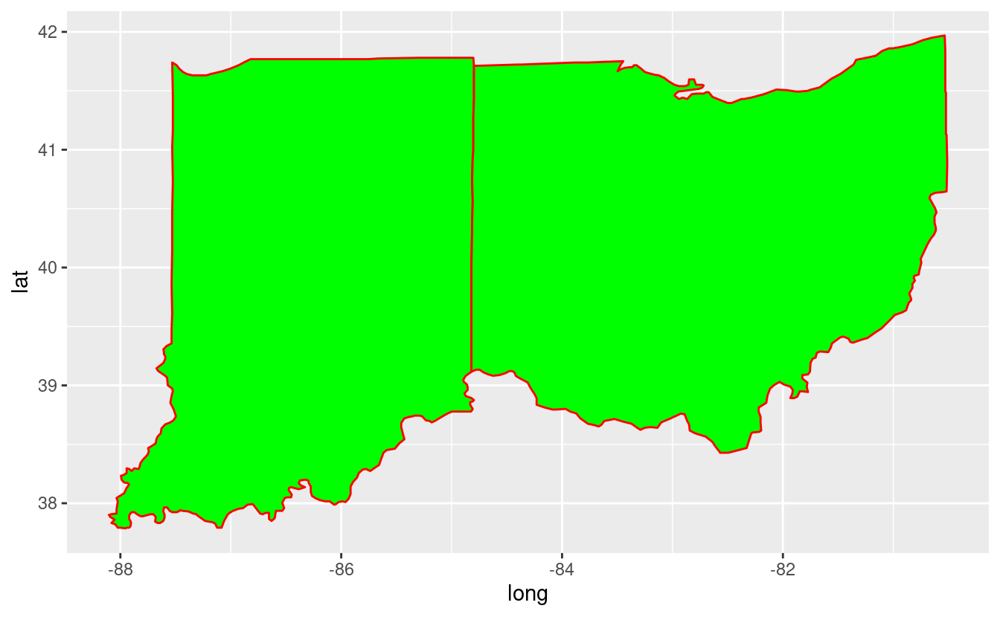
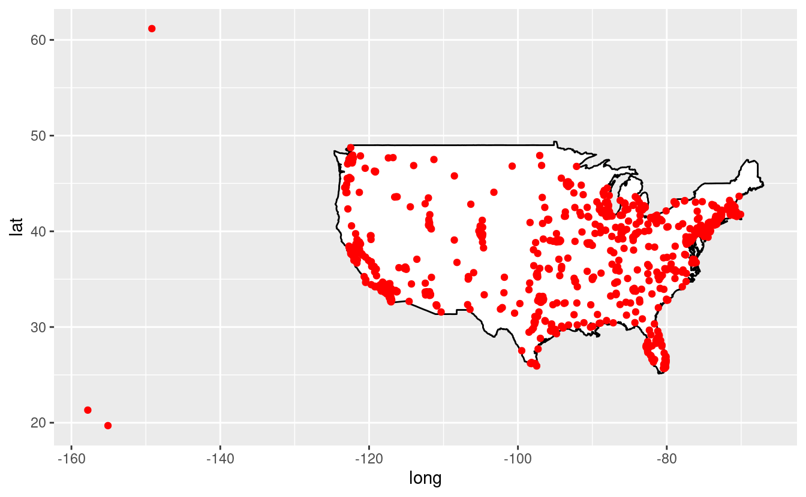
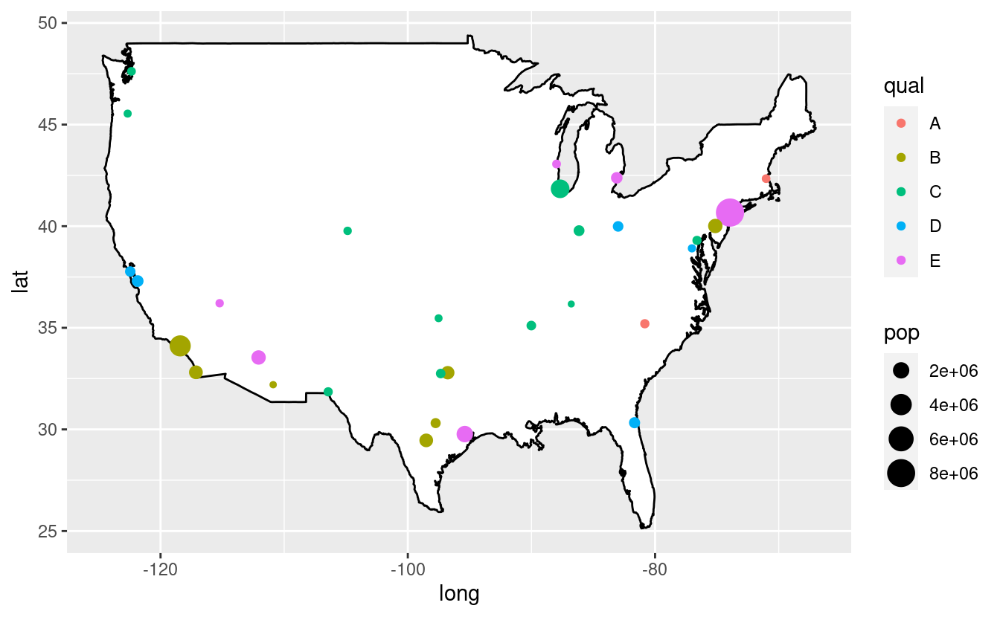
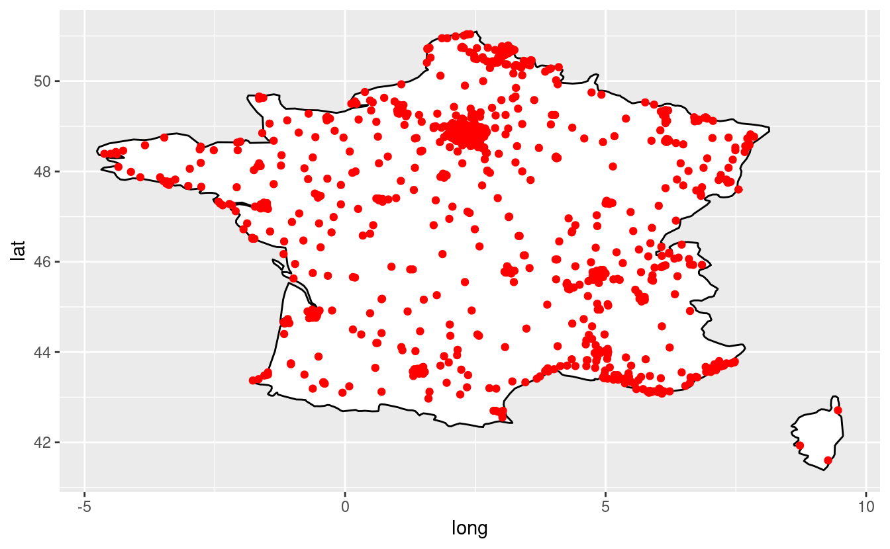
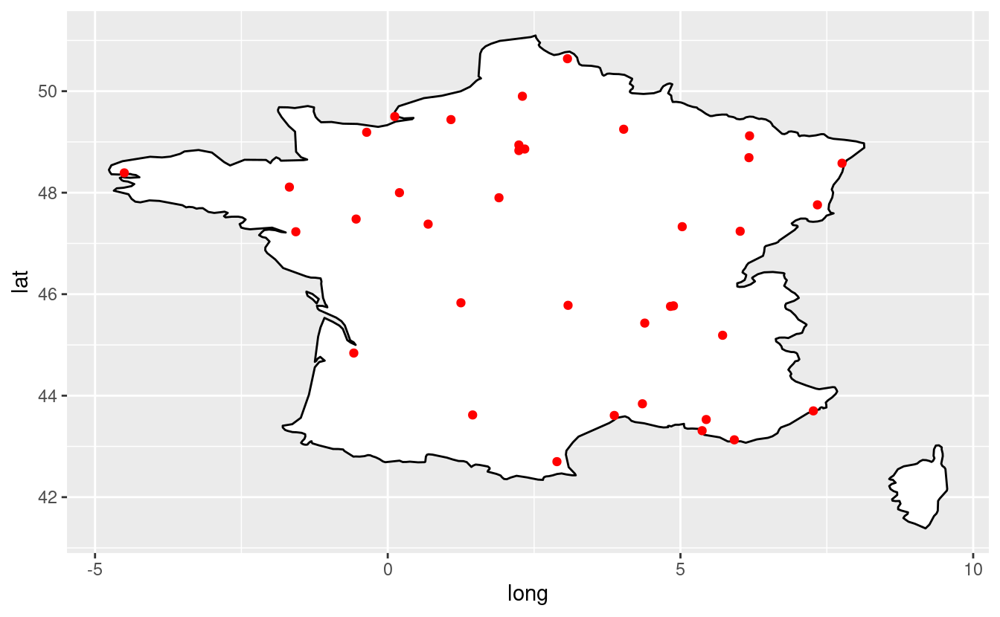
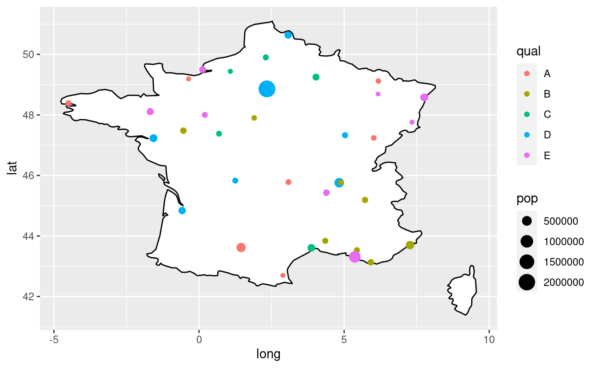
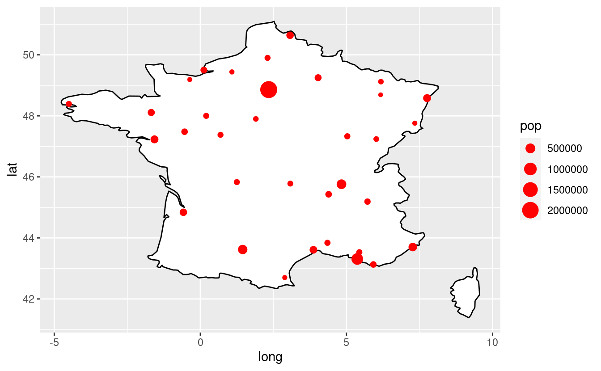

Session 11: Spatial data visualization with ggplot2
Today, we will cover the visualization of spatial data in R using the layered grammar of graphics implementation of ggplot2 in conjunction with the contextual information of static maps from world maps in the maps package.
Before we look at mapping using ggplot2, let us define some terms.
Areal data
Areal data is data which corresponds to geographical extents with polygonal boundaries.
The layered grammar of graphics
By definition, the layered grammar demands that every plot consist of five components:
-
a default dataset with aesthetic mappings,
-
one or more layers, each with either a geometric object (“geom”), a statistical transformation (“stat”), etc.
-
a scale for each aesthetic mapping (which can be automatically generated),
-
a coordinate system, and
-
a facet specification.
Since ggplot2 is an implementation of the layered grammar of graphics, every plot made with ggplot2 has each of the above elements. Consequently, map plots also have these elements, but certain elements are fixed to map components: the x aesthetic is fixed to longitude, the y aesthetic is fixed to latitude.
Drawing a map
Drawing a map in R requires two things. First, we have to draw the map using data that directs R to draw the polygon shapes that constitute the map. Then we add information to our map to plot color and marks. It’s the same basic logic that we have used in ggplot figures. The key thing is to have datasets that link that geographic data with the information that we want to put on the plot.
The maps package in R
The “maps” package in R contains a set of maps of the United States and the world drawn using longitude and latitude data. With world map, the USA map with the individual states you can accomplish a lot of the mapping tasks using the maps package. The maps package contains a lot of outlines of continents, countries, states, and counties
Making data frames from map outlines by ggplot2
Recall that ggplot2 operates on data frames. Therefore, we need some way to translate the maps data into a data frame format the ggplot can use. The package ggplot2 provides the map_data() function. The function turns a series of points along an outline into a data frame of those points. The package ggplot2 uses the following syntax: map_data("name") where “name” is a quoted string of the name of a map in the maps package.
Let us start by drawing maps of the World, USA, states, Ohio, Ohio and Indiana, and part of Europe using the maps package.
library(tidyverse)
library(maps)
library(scales)
library(stringr)
# Let us get a world map using the "map_data" function
world <- map_data("world")
## Let us get a US map including Hawaii, Alaska, and Puerto Rico:
usa <- map_data("usa")
# Let us get the states:
states <- map_data("state")
# Select Ohio using the filter function:
ohio <- states %>%
filter(region == "ohio")
- Let us plot a world map:
ggplot(data = world,
mapping = aes(x = long, y = lat, group = group)) +
geom_polygon(fill = "white", color = "black")

- Let us plot a map of the US:
ggplot(data = usa,
mapping = aes(x = long, y= lat, group = group)) +
geom_polygon(fill = "white", color = "black")

- Let us plot a map of the US with states:
ggplot(data = states,
mapping = aes(x = long, y = lat, group = group)) +
geom_polygon(fill = "blue", color = "black")

- Let us plot a map of Ohio:
ggplot(data = ohio,
mapping=aes(x = long, y = lat, group = group)) +
geom_polygon(fill = "white", color = "green")

- We can also plot a map for an arbitrary selection of states:
# We can select data for two states, for example Ohio and Indiana:
ohio_indiana <- states %>%
filter(region == "ohio" | region == "indiana")
# Plot the map of Ohio and Indiana:
ggplot(data = ohio_indiana,
mapping = aes(x = long, y = lat, group = group)) +
geom_polygon(fill = "green" , color = "red")

- We can also plot only a specific region by filtering by latitude and longitude:
world <- map_data("world")
a_region <- filter(world, long >- 10 & long < 15.1 & lat > 32 & lat < 55)
ggplot(data = a_region,
mapping = aes(x = long, y= lat, group = group)) +
geom_polygon(fill = "white", color = "black")

The structure of the data frame ohio.
head(ohio)
#> long lat group order region subregion
#> 1 -80.51776 40.64563 42 10440 ohio <NA>
#> 2 -80.55787 40.63990 42 10441 ohio <NA>
#> 3 -80.62089 40.63417 42 10442 ohio <NA>
#> 4 -80.66100 40.61698 42 10443 ohio <NA>
#> 5 -80.66673 40.60552 42 10444 ohio <NA>
#> 6 -80.67245 40.58833 42 10445 ohio <NA>
Look at the variables in ohio, note what they refer to:
-
long= longitude. Lines of longitude, or meridians, run between the North and South Poles and measure east-west positions. While prime meridian is assigned the value of 0 degrees, and runs through Greenwich (England), meridians to the west of the prime meridian are measured in degrees west (up to 180 degrees) and those to the east of the prime meridian are measured to in degrees east (up to 180 degrees). -
lat= latitude. Lines of latitude measure north-south position between the poles with the equator defined as 0 degrees, the North Pole defined as 90 degrees north, and the South Pole defined as 90 degrees south. -
group= an identifier that is unique for each subregion (here the counties). Group is very important! ggplot2’s functions can take a group argument which controls (amongst other things) whether adjacent points should be connected by lines. If they are in the same group, then they get connected, but if they are in different groups then they don’t. -
order= an identifier that indicates the order in which the boundary lines should be drawn -
region= string indicator for regions (here the states) -
subregion= string indicator for sub-regions (here the county names)
Part II: Add information to the maps
The second part of mapping in R, is to add information on the map created in the first part.
In drawing the map, the “maps” package creates the backbone for visualizations. Then we add additional information to show colors and shapes.
We will:
- fill a map by region,
- draw a Bubble map using city population,
- make a point for every city,
- vary size of point by city size and vary the color of the dots, and
- add external data to the map.
- Let us fill by region and make sure the the lines of state borders are white:
ggplot(data = states) +
geom_polygon(aes(x = long, y = lat, fill = region, group = group),
color = "white") +
coord_fixed(1.3) +
guides(fill = FALSE) # Do this to omit the legend

- Let us draw a “Bubble map”:
# The maps package has city data
head(maps::world.cities)
#> name country.etc pop lat long capital
#> 1 'Abasan al-Jadidah Palestine 5629 31.31 34.34 0
#> 2 'Abasan al-Kabirah Palestine 18999 31.32 34.35 0
#> 3 'Abdul Hakim Pakistan 47788 30.55 72.11 0
#> 4 'Abdullah-as-Salam Kuwait 21817 29.36 47.98 0
#> 5 'Abud Palestine 2456 32.03 35.07 0
#> 6 'Abwein Palestine 3434 32.03 35.20 0
my_cities <- maps::world.cities
usa_cities <- filter(my_cities,country.etc == "USA")
head(usa_cities)
#> name country.etc pop lat long capital
#> 1 Abilene USA 113888 32.45 -99.74 0
#> 2 Akron USA 206634 41.08 -81.52 0
#> 3 Alameda USA 70069 37.77 -122.26 0
#> 4 Albany USA 45535 44.62 -123.09 0
#> 5 Albany USA 75510 31.58 -84.18 0
#> 6 Albany USA 93576 42.67 -73.80 0
- Make a point for every city:
ggplot(data = usa,
mapping = aes(x = long, y = lat, group = group)) +
geom_polygon(color = "black", fill = "white") +
geom_point(data = usa_cities, color = "red",
aes(x = long, y = lat, group = NULL))

- Let’s pick just the big cities:
usa_big_cities <- filter(my_cities, country.etc == "USA" & pop > 500000)
ggplot(data = usa, mapping = aes(x = long, y = lat, group = group)) +
geom_polygon(color = "black", fill = "white") +
geom_point(data = usa_big_cities, color = "red",
aes(x = long, y = lat, group = NULL))

- Vary size of point by city size:
ggplot(data = usa, mapping = aes(x = long, y = lat, group = group)) +
geom_polygon(color = "black", fill = "white") +
geom_point(data = usa_big_cities, color = "red",
aes(x = long, y = lat, group = NULL, size = pop))

- Now vary the color of the dots:
usa_big_cities$qual <- sample(LETTERS[1:5], nrow(usa_big_cities),
replace = TRUE)
ggplot(data = usa, mapping = aes(x = long, y = lat, group = group)) +
geom_polygon(color = "black", fill = "white") +
geom_point(data = usa_big_cities,
aes(x = long, y = lat, group = NULL, color = qual, size = pop))

- Tweak the map:
# No scientific notation in legend r ggplot:
# scales package adds the "scale_size_continuous" function, and we can set label=comma
library(scales)
# Change the column name to make the legend nicer"
usa_big_cities$Population <- usa_big_cities$pop
usa_big_cities$Qualitative <- usa_big_cities$qual
# Do some additional refining:
ggplot(data = usa, mapping = aes(x = long, y= lat, group = group)) +
geom_polygon(color = "black", fill = "white") +
geom_point(data = usa_big_cities,
aes(x = long, y = lat, group = NULL,
color = Qualitative, size = Population)) +
scale_size_continuous(label = comma)

- Work with Ohio counties with external data:
# Get basic map data for all USA counties:
usa_counties = map_data("county")
# Subset to counties in Ohio:
oh = subset(usa_counties, region == "ohio")
head(oh)
#> long lat group order region subregion
#> 59960 -83.66902 39.02989 2012 59960 ohio adams
#> 59961 -83.56590 39.02989 2012 59961 ohio adams
#> 59962 -83.37109 39.06426 2012 59962 ohio adams
#> 59963 -83.30806 39.06426 2012 59963 ohio adams
#> 59964 -83.30233 39.05280 2012 59964 ohio adams
#> 59965 -83.25649 39.01842 2012 59965 ohio adams
# Plot ohio counties
ggplot() +
geom_polygon(data = oh,
aes(x = long, y = lat, group = group, fill = subregion),
color = "black", alpha = 0.3) +
coord_fixed(1.3) +
guides(fill = FALSE) +
ggtitle("Ohio counties")

- Read population data for Ohio counties:
# The data of the estimated population of each county in 2021 and percent change from 2010
Ohio <- read_csv("Ohio.csv")
head(Ohio)
#> # A tibble: 6 x 3
#> county Pop Perc
#> <chr> <dbl> <dbl>
#> 1 Vinton 12965 -3.28
#> 2 Monroe 13388 -8.36
#> 3 Morgan 14362 -4.47
#> 4 Noble 14578 -0.56
#> 5 Harrison 14786 -6.57
#> 6 Paulding 18532 -5.24
- Prepare the data for plotting:
# Create a new column called "county" so that counties start with capital letters
# using str_to_title function
oh$county <- str_to_title(oh$subregion)
# Merge population data with counties data by county variable using inner_join
# function, and named the new object "ohio_pop"
ohio_pop <- inner_join(oh, Ohio, by = "county")
# Select counties with population greater than 100000
ohio_big_pop <- filter(ohio_pop, Pop > 100000)
- Create the plot where we vary point size by population size:
ggplot(data = ohio_pop, mapping = aes(x = long, y = lat, group = group)) +
geom_polygon(color = "black", fill = "white") +
geom_point(data = ohio_big_pop, color = "red",
aes(x = long, y = lat, group = NULL, size = Pop)) +
guides(size = FALSE) # Do this to omit the legend

- The points are plotted on the boundaries of the counties Improve the graph by creating groups of population using quantile.
ApplyQuintiles <- function(x) {
cut(x, breaks = c(quantile(ohio_pop$Pop, probs = seq(0, 1, by = 0.2))),
labels = c("0-20", "20-40", "40-60", "60-80", "80-100"),
include.lowest = TRUE)
}
ohio_pop$grouped_pop <- sapply(ohio_pop$Pop, ApplyQuintiles)
head(ohio_pop)
#> long lat group order region subregion county Pop Perc
#> 1 -83.66902 39.02989 2012 59960 ohio adams Adams 27706 -2.91
#> 2 -83.56590 39.02989 2012 59961 ohio adams Adams 27706 -2.91
#> 3 -83.37109 39.06426 2012 59962 ohio adams Adams 27706 -2.91
#> 4 -83.30806 39.06426 2012 59963 ohio adams Adams 27706 -2.91
#> 5 -83.30233 39.05280 2012 59964 ohio adams Adams 27706 -2.91
#> 6 -83.25649 39.01842 2012 59965 ohio adams Adams 27706 -2.91
#> grouped_pop
#> 1 0-20
#> 2 0-20
#> 3 0-20
#> 4 0-20
#> 5 0-20
#> 6 0-20
- Plot the map:
ggplot() +
geom_polygon(data = ohio_pop,
aes(x = long, y = lat, group = group, fill = grouped_pop),
color = "black") +
coord_fixed(1.3) +
scale_fill_brewer(palette = "Set1", direction = -1) +
labs(fill = "Population Quantiles")

Breakout rooms
Exercise 1
Use the dataset of 2021 Ohio county’s population to plot counties with % positive population growth.
Solution (click here)
# get basic map data for all USA counties
usa_counties = map_data("county")
# subset to counties in Ohio
oh = subset(usa_counties, region == "ohio")
# read population data
Ohio <- read_csv("Ohio.csv")
# Create a new column called "county" so that counties start with capital letters using str_to_title function
oh$county = str_to_title(oh$subregion)
# merge counties with population
ohio_pop<-inner_join(oh, Ohio, by = "county")
# Select counties with % positive population growth
ohio_pos_pop <- filter(ohio_pop, Perc>0)
ggplot(data = ohio_pop,
mapping = aes(x = long, y= lat, group = group)) +
geom_polygon(color = "black", fill = "white") +
geom_point(data = ohio_pos_pop,
aes(x = long, y = lat, group = NULL, color = "red", size = Pop)) +
guides(size = FALSE) # do this to leave off the size legend

Exercise 2
Use the same data to plot counties with % negative population growth with quantile of 0-20, 20-40, 40-60, 60-80, and 80-100.
Solution (click here)
ohio_neg_pop <- filter(ohio_pop, Perc < 0)
ggplot(data = ohio_pop,
mapping = aes(x= long, y= lat, group = group)) +
geom_polygon(color = "black", fill = "white") +
geom_point(data = ohio_neg_pop, color = "red",
aes(x = long, y = lat, group = NULL, size = Perc)) +
guides(size = FALSE) # Omit the legend

ApplyQuintiles_n <- function(x) {
cut(x, breaks = c(quantile(ohio_neg_pop$Perc, probs = seq(0, 1, by = 0.2))),
labels = c("0-20", "20-40", "40-60", "60-80", "80-100"),
include.lowest = TRUE)
}
ohio_neg_pop$grouped_pop <- sapply(ohio_neg_pop$Perc, ApplyQuintiles_n)
# plot the map
ggplot() +
geom_polygon(data = ohio_neg_pop,
aes(x = long, y = lat, group = group, fill = grouped_pop),
color = "black") +
coord_fixed(1.3) +
scale_fill_brewer(palette = "Set1", direction = -1) +
labs(fill = "Negative population growth counties")

Bonus exercise
Plot the cities of France with population greater than 100,000. Vary size of point by city size, and vary the color of the dots.
Solution (click here)
world <- map_data("world")
france <- filter(world,region == "France")
ggplot(data = france,
mapping = aes(x = long, y = lat, group = group)) +
geom_polygon(color = "black", fill = "white") +
labs(fill = "France")

# The "maps" package has city data
head(maps::world.cities)
#> name country.etc pop lat long capital
#> 1 'Abasan al-Jadidah Palestine 5629 31.31 34.34 0
#> 2 'Abasan al-Kabirah Palestine 18999 31.32 34.35 0
#> 3 'Abdul Hakim Pakistan 47788 30.55 72.11 0
#> 4 'Abdullah-as-Salam Kuwait 21817 29.36 47.98 0
#> 5 'Abud Palestine 2456 32.03 35.07 0
#> 6 'Abwein Palestine 3434 32.03 35.20 0
my_cities <-maps::world.cities
france_cities <- filter(my_cities, country.etc == "France")
head(france_cities)
#> name country.etc pop lat long capital
#> 1 Abbeville France 26656 50.12 1.83 0
#> 2 Acheres France 23219 48.97 2.06 0
#> 3 Agde France 23477 43.33 3.46 0
#> 4 Agen France 34742 44.20 0.62 0
#> 5 Aire-sur-la-Lys France 10470 50.64 2.39 0
#> 6 Aix-en-Provence France 148622 43.53 5.44 0
# Make a point for every city:
ggplot(data = france, mapping = aes(x = long, y = lat, group = group)) +
geom_polygon(color = "black", fill = "white") +
geom_point(data = france_cities, color = "red",
aes(x = long, y = lat, group = NULL))

# Let's pick just the big cities:
france_big_cities <- filter(my_cities,country.etc == "France" & pop > 100000)
ggplot(data = france,
mapping = aes(x = long, y = lat, group = group)) +
geom_polygon(color = "black", fill = "white") +
geom_point(data = france_big_cities, color = "red",
aes(x = long, y = lat, group = NULL))

# vary size of point by city size
ggplot(data = france, mapping = aes(x = long, y = lat, group = group)) +
geom_polygon(color = "black", fill = "white") +
geom_point(data = france_big_cities, color = "red",
aes(x = long, y = lat, group = NULL, size = pop))

# Now vary the color of the dots
france_big_cities$qual <- sample(LETTERS[1:5],
nrow(france_big_cities),
replace = TRUE)
ggplot(data = france,
mapping = aes(x = long, y = lat, group = group)) +
geom_polygon(color = "black",fill = "white") +
geom_point(data = france_big_cities,
aes(x = long, y = lat, group = NULL, color = qual, size = pop))

# Do some tweaking:
# no scientific notation in legend r ggplot
# scales package adds the "scale_size_continuous" function to our arsenal, and we can set label=comma
library(scales)
# Change the column name to make the legend nicer:
france_big_cities$Population <- france_big_cities$pop
france_big_cities$Qualitative <- france_big_cities$qual
# Do some additional refining:
ggplot(data = france,
mapping = aes(x = long, y = lat, group = group)) +
geom_polygon(color = "black", fill = "white") +
geom_point(data = france_big_cities,
aes(x = long, y = lat, group = NULL,
color = Qualitative, size = Population)) +
scale_size_continuous(label = comma)
